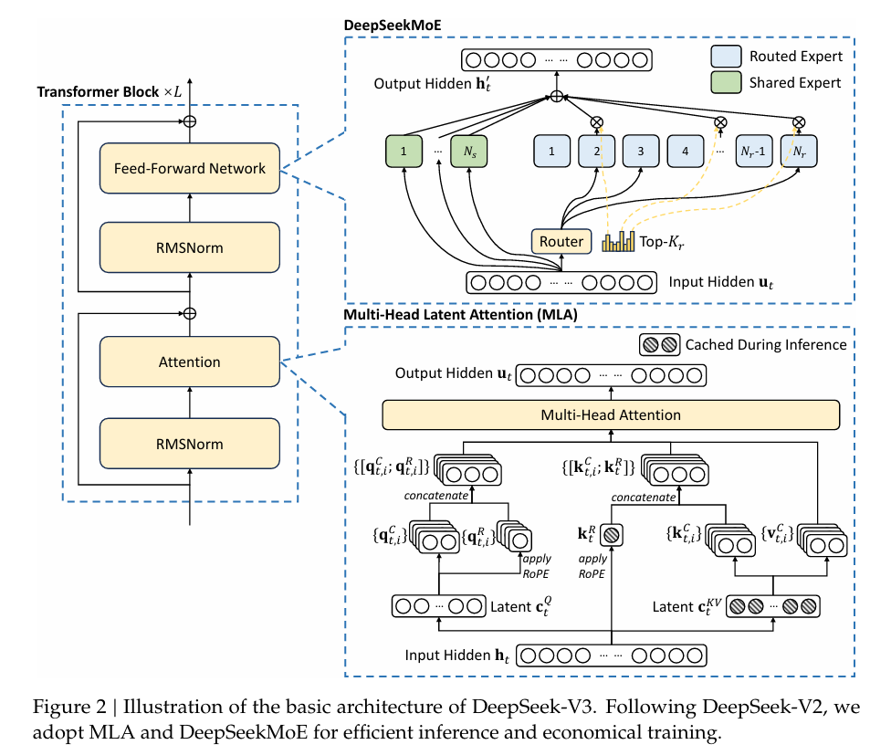
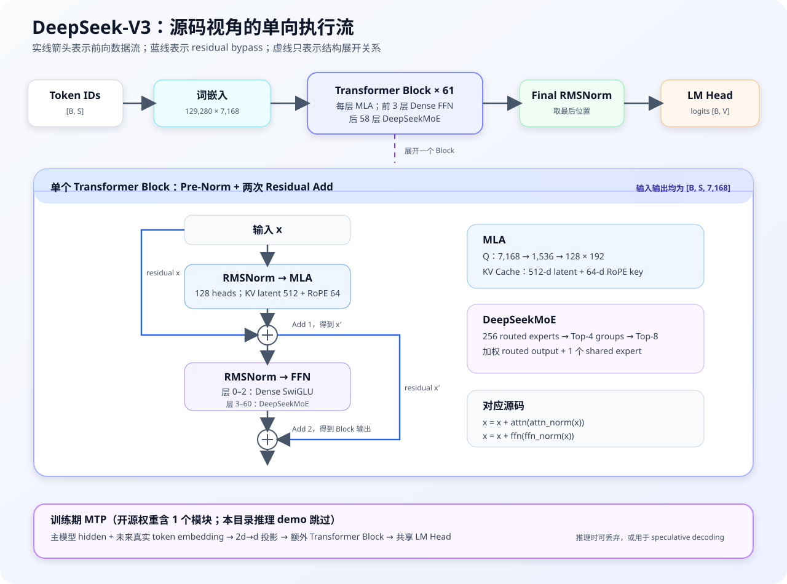
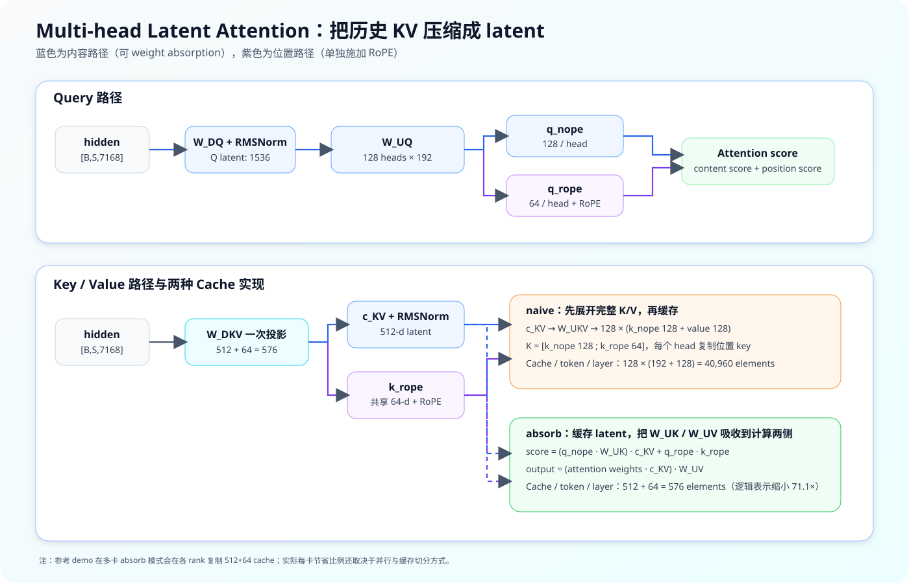

DeepSeek-V3 架构与参考实现解析¶
本文以 DeepSeek-V3 官方仓库为代码基准，以 DeepSeek-V3 Technical Report 和 DeepSeek-V2 Technical Report 为理论依据，解释模型架构、张量形状、推理流程和实现边界。
代码基准核对日期：2026-08-10。本文讨论的是 DeepSeek-V3 671B；
config_v3.1.json只在 FP8 scale 格式等实现细节上另行说明。
1. 先给结论¶
DeepSeek-V3 是一个 decoder-only、稀疏激活的 Transformer：
- 主模型共 61 个 Transformer Block，隐藏维度 7,168；
- 每层 Attention 都使用 MLA（Multi-head Latent Attention）；
- 前 3 层使用 Dense SwiGLU FFN，后 58 层使用 DeepSeekMoE；
- 每个 MoE 层包含 256 个 routed experts，每个 token 选择 8 个，同时始终经过 1 个 shared expert；
- 主模型共 671B 参数，每个 token 激活约 36.7B，通常四舍五入为 37B；
- 开源 checkpoint 还包含 1 个 MTP 模块。Hugging Face 文件标称总量约 685B，其中主模型 671B、MTP 部分约 14B；
- 模型在 4K 序列上完成主要预训练，再通过 YaRN 两阶段扩展到 32K、128K；
- 权重以 FP8 E4M3、128×128 block scale 发布，运行时可以解量化到 BF16，也可以走动态激活量化的 FP8 GEMM。
最重要的三个设计取舍是：
- MLA 用低维 latent 代替完整历史 K/V，降低长上下文 decode 的缓存和访存成本。
- DeepSeekMoE 用细粒度专家扩大总参数量，但每个 token 只激活少量专家，把模型容量和单 token 计算量解耦。
- 辅助损失无关的负载均衡与 MTP 属于训练设计；参考推理代码只消费其结果，没有实现完整训练算法。
下图是技术报告 Figure 2 的总体架构图。左侧给出重复的 Transformer Block；右上展开 DeepSeekMoE，右下展开 MLA。MLA 图中带斜线阴影的向量表示推理时需要缓存的内容，即压缩后的 c_t^KV 与 decoupled RoPE key k_t^R。

图源：DeepSeek-V3 Technical Report, Figure 2。本站将本地副本统一存放在模块的
assets/目录中，便于离线构建。
2. 文档范围：模型设计不等于 demo 能力¶
DeepSeek-V3 官方仓库公开的是一个便于理解权重与推理路径的最小实现，不是训练 DeepSeek-V3 的完整 HAI-LLM 系统，也不是面向生产的高吞吐推理引擎。
| 能力 | 论文 / 权重 | 官方 inference/ demo |
|---|---|---|
| 61 层主模型 | 完整 | 已实现 |
| MLA naive 路径 | 架构等价形式 | 已实现 |
| MLA weight absorption | 推理优化 | 已实现 |
| DeepSeekMoE 前向 | 完整架构 | 已实现，但使用 Python 循环 |
| auxiliary-loss-free bias | 训练中动态更新 | 只加载 correction bias 并参与选路 |
| MTP | 训练目标，可用于 speculative decoding | 未实现；转换时跳过第 61 号附加层 |
| FP8 训练 | 细粒度混合精度训练框架 | 未实现 |
| FP8 权重推理 | 官方权重格式 | 已提供 BF16 解量化和 FP8 GEMM 两条路径 |
| DualPipe / 16-way PP / 64-way EP | 训练系统 | 未实现 |
| 高性能 token dispatch / combine | 生产系统所需 | 未实现 All-to-All kernel |
因此，阅读代码时应区分两类问题：
- “DeepSeek-V3 为什么这样设计？”——看论文和本文章节 4–8；
- “这个最小仓库具体怎样跑起来？”——看本文章节 9–13。
3. 源码地图¶
| 文件 | 作用 | 建议关注点 |
|---|---|---|
inference/configs/config_671B.json |
671B 结构参数 | 层数、MLA 维度、专家数、FP8 dtype |
inference/model.py |
模型主体 | MLA、Gate、MoE、Block、并行线性层 |
inference/kernel.py |
Triton 低精度 kernel | activation quant、weight dequant、FP8 GEMM |
inference/generate.py |
自回归生成 | checkpoint 加载、prefill/decode、采样 |
inference/convert.py |
HF 权重转 demo 格式 | 参数名映射、TP/EP 切分、跳过 MTP |
inference/fp8_cast_bf16.py |
FP8 checkpoint 转 BF16 | 128×128 block 反量化 |
README_WEIGHTS.md |
权重结构说明 | 主模型 / MTP 边界、FP8 scale |
本文聚焦 DeepSeek-V3 的“架构—源码”直接映射；建议阅读时固定官方仓库 commit，避免后续实现变更导致行号漂移。
4. 671B 配置与层级结构¶
4.1 核心超参数¶
config_671B.json 中的主要配置如下：
| 配置项 | 值 | 含义 |
|---|---|---|
vocab_size |
129,280 | 词表大小 |
dim |
7,168 | residual stream / hidden size |
n_layers |
61 | 主模型 Transformer Block 数 |
n_dense_layers |
3 | 前 3 层使用 Dense FFN |
inter_dim |
18,432 | Dense SwiGLU 中间维度 |
moe_inter_dim |
2,048 | 单个专家的中间维度 |
n_heads |
128 | Attention query heads |
q_lora_rank |
1,536 | Query 低秩 latent 维度 |
kv_lora_rank |
512 | Key/Value 联合 latent 维度 |
qk_nope_head_dim |
128 | 每个 Q/K head 的内容维度 |
qk_rope_head_dim |
64 | 每个 Q/K head 的位置维度 |
v_head_dim |
128 | 每个 Value head 维度 |
n_routed_experts |
256 | 每个 MoE 层的 routed experts 数 |
n_shared_experts |
1 | 始终执行的 shared expert 数 |
n_activated_experts |
8 | 每 token 的 routed Top-K |
n_expert_groups |
8 | routed experts 分组数 |
n_limited_groups |
4 | 每 token 可进入的 Top group 数 |
score_func |
sigmoid |
router affinity 函数 |
route_scale |
2.5 | 选中专家权重的最终缩放 |
dtype |
fp8 |
checkpoint 权重类型 |
由此可得每个 attention head：
4.2 主干数据流¶
论文图强调数学结构，下面的 SVG 则按官方 model.py 的实际执行顺序重排：顶部是严格从左到右的主模型前向，下方只展开一个 Block。虚线表示“展开关系”，不表示张量流动；Block 内蓝色箭头表示两次 residual bypass。

模型前向可概括为：
token ids [B,S]
→ vocab-parallel embedding [B,S,7168]
→ Transformer Block × 61
├─ RMSNorm → MLA → residual add
└─ RMSNorm → Dense MLP / MoE → residual add
→ RMSNorm
→ 取最后一个位置
→ vocab-parallel LM head
→ all-gather logits [B,129280]
Block 是标准 Pre-Norm 结构：
Block.__init__ 使用 layer_id < n_dense_layers 决定 FFN 类型，因此层号 0–2 是 Dense MLP，层号 3–60 是 MoE，共 3 个 Dense 层和 58 个 MoE 层。
5. MLA：低秩压缩、解耦 RoPE 与 Weight Absorption¶
5.1 为什么不是普通 MHA¶
普通 MHA 在自回归 decode 时，需要为每个历史 token 保存所有 head 的 K 和 V。DeepSeek-V3 的维度下，逻辑缓存量为：
长上下文 decode 通常受显存带宽限制。MLA 的核心不是简单减少 head 数，而是把所有 head 的 K/V 内容联合压缩到一个 512 维 latent：
位置相关的 key 不能直接按同样方式吸收，所以额外保留 64 维的 decoupled RoPE key。最终逻辑缓存为：

5.2 Query 路径¶
在 671B 配置中，MLA.__init__ 创建：
x [B,S,7168]
→ wq_a: 7168 → 1536
→ RMSNorm(1536)
→ wq_b: 1536 → local_heads × 192
→ reshape [B,S,local_heads,192]
→ split(q_nope=128, q_pe=64)
→ RoPE(q_pe)
公式写成：
q_lora_rank 中的 “LoRA” 表示模型原生的低秩投影结构，不是 PEFT adapter。
5.3 KV 与位置路径¶
MLA.forward 首先用一个投影同时产生 KV latent 和位置 key：
x [B,S,7168]
→ wkv_a: 7168 → (512 + 64)
→ split
├─ kv [B,S,512] → RMSNorm
└─ k_pe [B,S,64] → 增加共享 head 维 → RoPE
内容 key 和 value 可以从 latent 恢复：
位置 key：
每个 head 使用拼接后的 key：
这里的 k_t^R 在 head 间共享，但各 head 的 q_{t,i}^R 不同，所以 positional score 仍然是 per-head 的。
5.4 Decoupled RoPE 为什么必要¶
对不带位置变换的内容 key，有结合律：
因此可以不展开历史 k_nope，把 W^{UK} 吸收到 query 侧。但若对整个 key 使用位置相关的旋转矩阵：
R_j 随历史位置 j 变化，固定的 W^{UK} 不能直接跨所有位置吸收到 query 侧。MLA 将 score 拆成内容项和位置项：
这样，内容项可以 absorption，64 维位置项单独做 RoPE 和 cache。
5.5 naive 路径¶
设置全局变量 attn_impl = "naive" 时，参考实现：
- 用
wkv_b将 512 维 latent 展开为每个 head 的k_nope和v； - 将共享的
k_pe扩展到所有 local heads； - 缓存完整
k_cache与v_cache； - 直接计算普通 attention。
核心形状是：
这条路径更直观，主要用于验证结构正确性。
5.6 absorb 路径¶
默认 attn_impl = "absorb"。代码把 wkv_b reshape 为：
其中前 128 行是每个 head 的 W_UK，后 128 行是 W_UV。
Key-side absorption：
Value-side absorption：
所以缓存只需：
源码对应 model.py:481–495。naive 与 absorb 数学等价，但浮点运算顺序不同，结果只应在数值误差范围内接近。
5.7 Cache 节省量与并行语义¶
从模型的逻辑表示看：
即元素数约缩小 71.1 倍，减少约 98.59%。若全部按 BF16 估算，batch=1、61 层、128K token：
| 形式 | 单 token / layer | 128K × 61 层 |
|---|---|---|
| 完整 MHA 风格 K/V | 80 KiB | 610 GiB |
| MLA latent + RoPE key | 1.125 KiB | 约 8.58 GiB |
这组数字用于解释表示压缩，不是某个生产框架的实测显存。参考 demo 的 absorb cache 在各 tensor-parallel rank 上复制，而 naive cache 只保存 local heads；allocator、cache dtype、分页、batch 和并行切分都会改变实际单卡占用。
5.8 YaRN 长上下文¶
precompute_freqs_cis 对 RoPE 频率做 YaRN 风格插值，并在扩展长度下调整 attention softmax scale。论文中的流程是：
- 主要预训练最大序列长度 4K；
- 额外训练 1,000 steps 扩展到 32K；
- 再训练 1,000 steps 扩展到 128K；
- YaRN 的上下文扩展集中在解耦 RoPE 通道；论文特别说明其作用对象是 shared positional key
k^R，代码则用同一组freqs_cis对q_pe与k_pe做匹配旋转。
需要注意：模型具备 128K 能力，不代表这个 demo 的默认内存配置就是 128K。ModelArgs.max_seq_len 默认是 4096 * 4 = 16K，而 config_671B.json 没有覆盖它；要实验更长序列，必须显式修改配置/代码并准备相应 cache 显存。
6. DeepSeekMoE：细粒度 routed experts + shared expert¶
6.1 单个专家¶
Dense MLP 和 Expert 都采用 SwiGLU：
- Dense MLP 中间维度为 18,432；
- 单个 routed/shared expert 的中间维度为 2,048；
- 输入输出维度都保持 7,168，因此 FFN 类型的切换对 residual stream 透明。
6.2 Router 前向¶
对展平后的 token hidden state x ∈ R^(tokens×7168)，Gate.forward 的步骤是：
- 线性投影到 256 个专家分数；
- 对 V3 使用 sigmoid 得到原始 affinity
s； - 将 inference checkpoint 中的 correction bias
b只加到“选谁”的分数上； - 将 256 个专家分成 8 组，每组 32 个；
- 使用组内最高两个带 bias 分数之和作为 group score，保留 Top-4 groups；
- 在候选组内选 Top-8 experts；
- 真正的 mixture 权重从无 bias 的原始 affinity 中 gather；
- 对 8 个权重归一化，再乘
route_scale=2.5。
形式化地：
选路使用：
输出混合权重仍来自 s：
这个细节很关键：correction bias 改变专家入选机会，但不直接改变已选专家输出的语义权重。
6.3 MoE 输出¶
对 token x_t，MoE 分支输出：
参考实现为每个本地专家查找命中的 (token_idx, top_idx)，逐专家执行前向并累加；shared expert 对所有 token 执行。多 rank 时 routed 输出做 all_reduce，最后与 shared 输出相加，见 MoE.forward。
6.4 Auxiliary-loss-free load balancing¶
训练期若某专家过载，就降低其 bias；若负载不足，就提高其 bias：
DeepSeek-V3 论文报告前 14.3T tokens 使用 γ=0.001，最后 500B tokens 设为 0。它仍保留极小的 sequence-wise auxiliary loss（α=0.0001）防止单序列极端失衡，所以“auxiliary-loss-free”准确含义是：主要的 batch-wise 均衡不通过会干扰模型目标的大额辅助损失完成，并非训练目标中绝对没有任何 balance loss。
model.py 是推理实现，只读取训练完成后的 bias，不包含负载监控和 bias 更新。
6.5 Group-limited 与论文中的 node-limited¶
本 demo 的 8 groups / Top-4 groups 对应限制候选专家范围的推理逻辑。论文中的训练系统进一步将专家部署到 64 张 GPU、8 个节点，并限制每个 token 最多发送到 4 个节点，以约束跨节点通信。
两者目标相同：先限制通信域，再在域内选择专家。但不能把当前 Python group top-k 当成完整的跨节点 dispatch 实现；官方参考仓库没有实现生产训练系统的 All-to-All kernel。
7. MTP：训练信号与推理加速候选¶
MTP（Multi-Token Prediction）让每个位置除预测下一个 token 外，还按深度顺序预测更远的未来 token。它不是简单挂多个互相独立的 LM Head。
第 k 个模块组合：
- 上一深度 hidden state
h_i^(k-1)； - 第
i+k个真实 token 的共享 embedding； - 两路 RMSNorm 后拼接；
2d → d投影；- 一个额外 Transformer Block；
- 与主模型共享的 output head。
主模型训练 loss 加上各 MTP depth 的平均损失：
MTP 有两个作用：
- 训练时增加每个位置的监督密度，让主模型学习对更远未来有规划的表示；
- 推理时可以直接丢弃，不影响主模型；也可以作为 speculative decoding 的候选生成模块。
开源权重中 num_nextn_predict_layers=1，附加模块位于 model.layers.61。但 convert.py 遇到 model.layers.61 会 continue，而 Transformer 只按 n_layers=61 创建主模型的 0–60 层。因此当前 demo 不加载也不执行 MTP。
8. FP8 设计与 Triton 实现¶
8.1 权重格式¶
{
"activation_scheme": "dynamic",
"fmt": "e4m3",
"quant_method": "fp8",
"weight_block_size": [128, 128]
}
每个 128×128 权重块保存一个 FP32 weight_scale_inv。逻辑反量化为：
不足 128 对齐的边缘在计算 scale 时先补零，量化后去除 padding。
8.2 Linear 的两条运行路径¶
linear 根据权重和全局 gemm_impl 选择：
BF16 权重
→ torch.nn.functional.linear
FP8 权重 + gemm_impl == "bf16"（默认）
→ weight_dequant 到 BF16
→ F.linear
FP8 权重 + gemm_impl == "fp8"
→ activation 动态量化
→ Triton fp8_gemm
→ 可选 bias
Linear.__init__ 根据矩阵尺寸创建二维 scale tensor：
8.3 activation quantization¶
act_quant 要求最后一维能被 128 整除，对每 128 个连续 channel 计算 amax 和动态 scale，并输出 float8_e4m3fn。
对普通 V3，scale 使用 FP32。config_v3.1.json 额外设置 scale_fmt: "ue8m0"；当该参数传入 act_quant 时，kernel 会把 scale 向上取整到 2 的整数次幂。这是 V3.1 权重格式兼容点，不改变本文讨论的 671B 主干结构。当前参考代码的 ColumnParallelLinear / RowParallelLinear 重写了 forward，没有把 scale_fmt 继续传给 linear helper，因此不要把这个 demo 视为所有 UE8M0 路径的完整生产实现。
8.4 FP8 GEMM¶
fp8_gemm_kernel 做 tiled matmul：
- 加载 FP8 activation tile 和 weight tile；
tl.dot(a, b)；- 按 activation scale 与 weight block scale 恢复量级；
- 用 FP32 accumulator 累加；
- 输出为 BF16。
这是参考 kernel，展示了数据布局和 scale 如何进入 GEMM，不代表论文中完整的 FP8 训练栈。论文还包含 tile/block-wise training quantization、提高累加精度、FP8 activation cache/dispatch、BF16 optimizer states 等训练系统设计。
8.5 论文中的训练系统¶
DeepSeek-V3 在 2,048 张 NVIDIA H800 上训练，每节点 8 卡，节点内使用 NVLink/NVSwitch，节点间使用 InfiniBand。训练并行组合为：
- 16-way Pipeline Parallelism；
- 64-way Expert Parallelism，跨 8 个节点；
- ZeRO-1 Data Parallelism；
- 不使用 Tensor Parallelism。
DualPipe 从流水线两端同时调度 micro-batch，并重叠前向/反向计算与 MoE dispatch/combine 通信；配套的跨节点 All-to-All kernel 根据 IB/NVLink 拓扑控制通信占用的 SM 数。这里的关键不是某一个独立算子，而是路由约束、并行策略、网络拓扑和 kernel 的联合设计。
这些训练组件没有出现在官方参考推理目录中。model.py 中的 Tensor Parallelism 是轻量推理 demo 的权重切分方案，不应与论文“训练时避免 TP”这一结论混为一谈。
9. 模型并行与专家并行¶
9.1 Vocabulary parallel embedding¶
ParallelEmbedding 沿 vocab 维切分 embedding。每个 rank：
- 只保存自己的词表区间；
- 将不属于本 rank 的 token 位置 mask 为 0；
- 本地 lookup 后清零 mask 位置；
all_reduce合并完整 embedding。
9.2 Column parallel¶
ColumnParallelLinear 沿输出特征切分权重：
每个 rank 得到一部分输出，不立刻通信。MLA 的 Q heads、展开后的 K/V heads，Dense MLP 的 w1/w3 和 LM head 都使用这种切分。
9.3 Row parallel¶
RowParallelLinear 沿输入特征切分：
每个 rank 算局部 partial output，再 all_reduce。MLA 输出投影 wo 与 Dense MLP 的 w2 使用它，正好接住 column-parallel 的局部输出。
9.4 Expert partition¶
256 个 routed experts 按 rank 连续均分，每个 rank 只构建自己的 expert 区间。convert.py 同样按 expert ID 将权重写到对应 shard。
这个最小实现没有把 token 通过 All-to-All dispatch 到专家所在 rank。因为所有 rank 都持有同一批 token hidden states，每个 rank 找出命中本地专家的 token、计算局部 routed output，再 all_reduce 汇总。这种方式逻辑简单，但计算/通信/显存行为不同于高性能 EP 系统。
10. Checkpoint 转换¶
convert.py 完成三件事。
10.1 参数名映射¶
例如：
| Hugging Face 名称 | demo 名称 |
|---|---|
embed_tokens |
embed |
input_layernorm |
attn_norm |
post_attention_layernorm |
ffn_norm |
q_a_proj / q_b_proj |
wq_a / wq_b |
kv_a_proj_with_mqa / kv_b_proj |
wkv_a / wkv_b |
o_proj |
wo |
e_score_correction_bias |
bias |
weight_scale_inv |
scale |
10.2 张量切分¶
映射表中的切分维度：
- dim 0：embedding、Q/K/V column-parallel 输出、
w1/w3、LM head； - dim 1：attention
wo、MLP/expertw2； None：norm、router 等复制到各 shard、不按该规则切分；权重的weight_scale_inv会随所属投影采用相应的切分维度；- routed expert：依据 expert ID 只写入所属 rank。
10.3 MTP 处理¶
model.layers.61 被明确跳过，进一步证明输出的 model{rank}-mp{world_size}.safetensors 只服务 61 层主模型。
11. 自回归生成流程¶
generate.py 的执行顺序：
- 读取 JSON，构造
ModelArgs； - 初始化 NCCL process group 和本地 CUDA device；
- 构造
Transformer，预热一次，再加载当前 rank 的 safetensors； - tokenizer 将 prompt 编码；
- 第一次
model(tokens[:, 0:prompt_len], start_pos=0)完成 prefill； - 此后每轮只输入上一个新 token，并通过
start_pos追加 KV cache； - 模型只对最后位置做 final norm 和 LM head；
- temperature > 0 时用 exponential-race 形式采样，否则 greedy argmax；
- 遇到 EOS 或长度上限后停止。
Transformer.forward 在 seqlen > 1 时构造 causal mask；decode 单 token 时依靠 cache 的有效前缀天然保证因果性。
批量生成把不同长度 prompt 放入一个以 -1 填充的 tensor，并从最短 prompt 位置开始推进；每个位置若仍属于原 prompt，就保留原 token，否则采样。这个实现适合功能演示，不包含 continuous batching、paged cache、prefix cache、chunked prefill 或 fused sampling。
12. 如何运行参考实现¶
官方 README 给出的环境约束是 Linux、Python 3.10、CUDA GPU；Mac 和 Windows 不在支持范围内。依赖固定为 PyTorch 2.4.1、Triton 3.0.0、Transformers 4.46.3 和 safetensors 0.4.5。
12.1 转换权重¶
cd inference
python convert.py \
--hf-ckpt-path /path/to/DeepSeek-V3 \
--save-path /path/to/DeepSeek-V3-Demo \
--n-experts 256 \
--model-parallel 16
输出类似：
12.2 启动两节点、每节点八卡¶
torchrun \
--nnodes 2 \
--nproc-per-node 8 \
--node-rank "$RANK" \
--master-addr "$ADDR" \
generate.py \
--ckpt-path /path/to/DeepSeek-V3-Demo \
--config configs/config_671B.json \
--interactive \
--temperature 0.7 \
--max-new-tokens 200
这里的 --model-parallel 16 必须与启动时总进程数一致，否则 checkpoint shard、head 数和 expert partition 无法对应。
12.3 FP8 转 BF16¶
若目标引擎不直接消费官方 FP8 权重：
python fp8_cast_bf16.py \
--input-fp8-hf-path /path/to/fp8_weights \
--output-bf16-hf-path /path/to/bf16_weights
671B 权重对存储、主机内存、GPU 显存和跨机网络要求极高。这个命令说明格式转换方式，不意味着单机可以装下完整模型。
13. 参考实现的性能边界¶
不要从这个 demo 的吞吐推断 DeepSeek-V3 架构本身的上限。主要瓶颈包括：
MoE.forward用 Python 循环遍历专家，并逐专家索引 token；- 没有 fused router、token permutation、grouped GEMM、dispatch/combine kernel；
- 专家并行通过 replicated token + all-reduce 模拟，没有高性能 All-to-All；
- cache 是按
max_batch_size × max_seq_len预分配的连续 tensor，不是 paged cache； - attention 使用
einsum，没有 FlashMLA / FlashAttention kernel； - 没有 pipeline parallel、data-parallel attention、continuous batching；
- MTP checkpoint 被跳过，不能直接做 speculative decoding；
- 默认
gemm_impl="bf16"会先解量化 FP8 权重，需显式改为"fp8"才走参考 FP8 GEMM。
生产部署通常交给 SGLang、vLLM、TensorRT-LLM、LMDeploy 等引擎；它们对 kernel、并行、调度和 cache 的实现会随版本快速变化，应以目标引擎当前官方文档为准。
14. 代码阅读顺序¶
若只希望用最短路径理解实现，推荐：
config_671B.json：先固定所有维度；Block.forward：确认 Pre-Norm 与 residual；MLA.forward的 naive 分支：理解 Q/K/V 真实语义；MLA.forward的 absorb 分支：推导两次矩阵结合律；Gate.forward：区分 selection score 与 mixture weight；MoE.forward：理解 routed + shared 两条路径；ColumnParallelLinear/RowParallelLinear：理解 head/hidden 切分；convert.py：把 HF checkpoint 名称映射回上述模块；kernel.py：最后再看 FP8 scale 与 GEMM。
建议至少做三个验证实验：
- 小尺寸随机权重下对比
attn_impl="naive"与"absorb"； - 记录 router 的 group Top-K、expert Top-K、原始权重与 correction bias；
- 分别统计 naive / absorb cache 的 shape、dtype 和实际字节数。
15. 常见误区¶
15.1 “671B 都会参与每个 token 计算”¶
错误。MoE 的大部分 routed experts 对当前 token 不执行；约 37B 是每 token 激活参数口径，671B 是主模型总参数口径。
15.2 “MLA 就是把每个 head 的 K/V 各压成 512 维”¶
错误。512 维 c_KV 是跨所有 heads 联合共享的 latent；另有共享的 64 维 RoPE key。
15.3 “correction bias 直接乘到专家输出上”¶
错误。bias 只参与 Top-K selection，实际混合权重从无 bias 的 sigmoid affinity 取值。
15.4 “auxiliary-loss-free 表示没有任何均衡损失”¶
不准确。主要的 batch-wise 均衡由动态 bias 完成，但论文仍使用极小的 sequence-wise auxiliary loss 防止极端失衡。
15.5 “开源 checkpoint 有 MTP，所以这个 demo 会自动加速”¶
错误。转换脚本主动跳过 MTP 附加层，Transformer 也未定义 MTP forward。
15.6 “模型支持 128K，所以 config 默认就是 128K”¶
错误。论文和模型能力是 128K；当前 dataclass 默认 cache 长度是 16K，需调整运行配置并承担显存开销。
15.7 “参考代码中的 expert parallel 就是训练系统的 64-way EP”¶
错误。参考代码仅按 rank 放置专家并 all-reduce 输出；论文系统还包含跨节点 token dispatch/combine、通信拓扑与计算通信重叠。
16. 参考资料¶
官方一手资料¶
- DeepSeek-V3 Technical Report
- DeepSeek-V2 Technical Report：MLA 与 DeepSeekMoE 的更完整来源
- DeepSeek-V3 官方仓库
- DeepSeek-V3 权重说明
- DeepSeek-V3 671B 配置
- DeepSeek-V3 参考模型实现